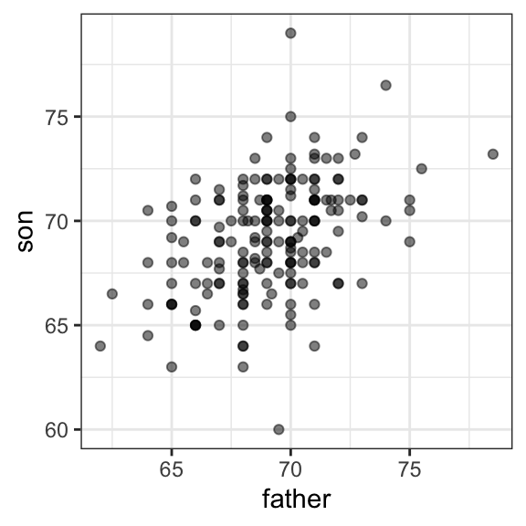
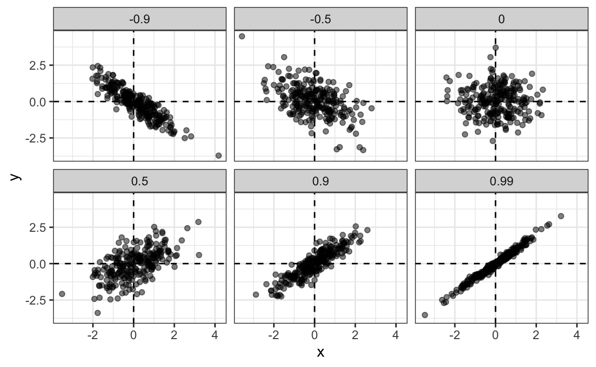
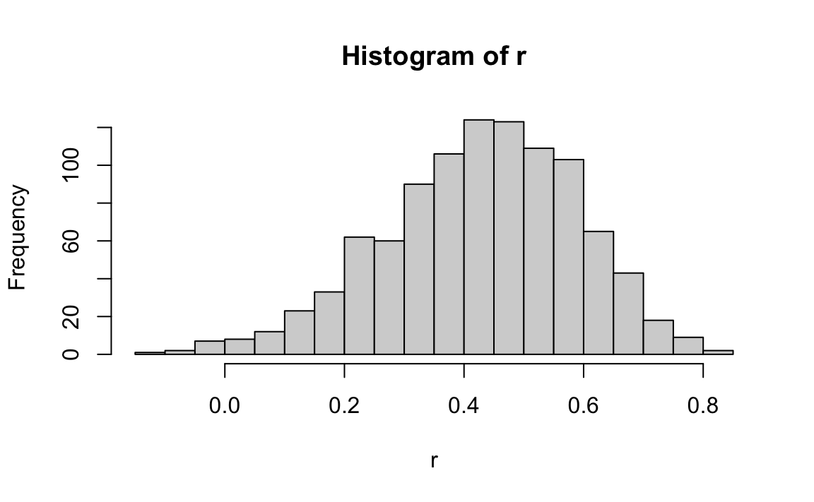
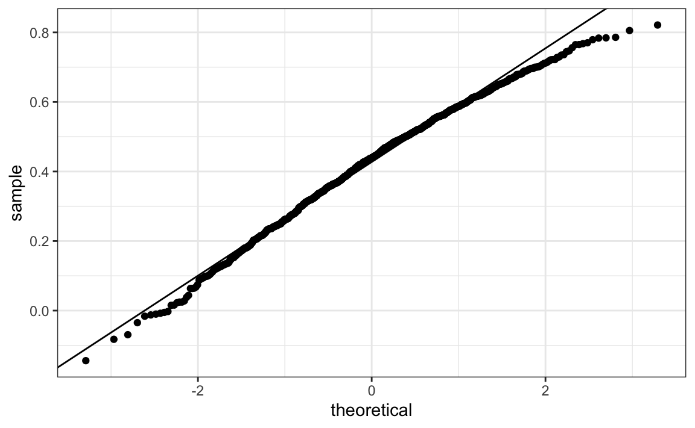
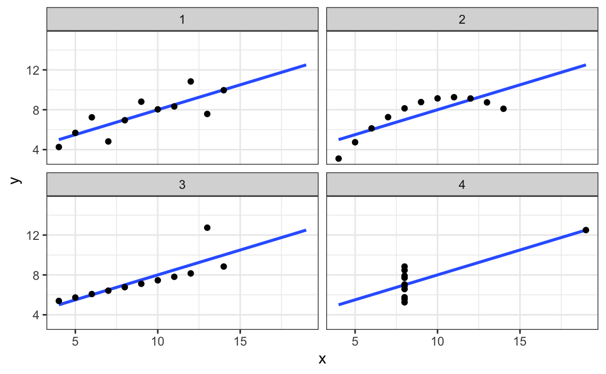
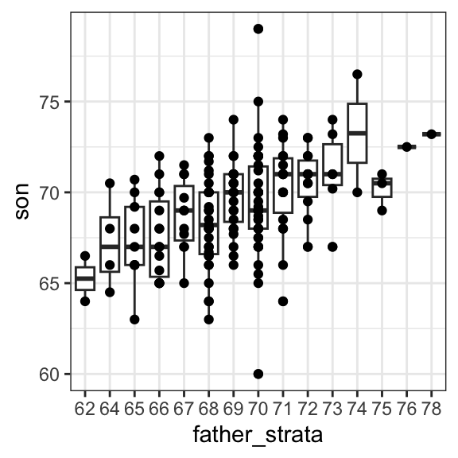
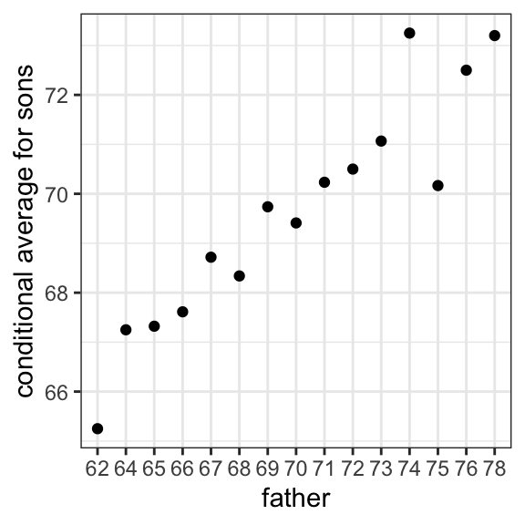
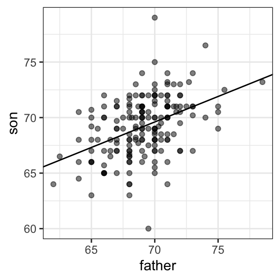
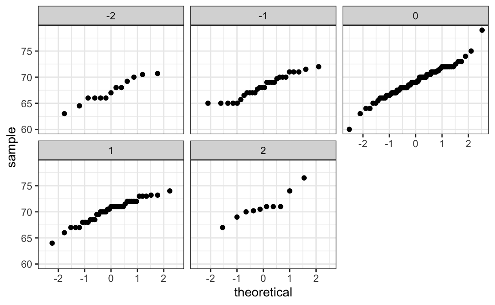
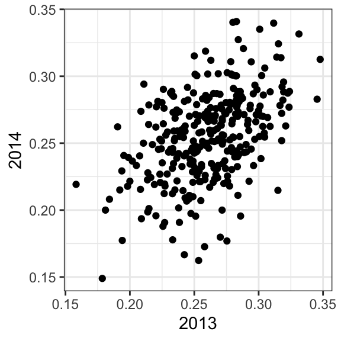

library(data.table)
library(HistData)
set.seed(1983)
galton <- as.data.table(GaltonFamilies)
galton <- galton[gender == "male", .SD[sample(.N, 1)], by = family]
galton <- galton[, .(father, son = childHeight)]15 Introduction to Regression
To understand the concepts of correlation and simple regression, we turn to the dataset that gave birth to regression itself. The example comes from genetics. Francis Galton1 studied variation and heredity in human traits, collecting data from families to investigate how characteristics are passed from parents to children. Through this work, he introduced the ideas of correlation and regression and explored how pairs of variables that follow a normal distribution are related. Of course, when Galton collected his data, our understanding of genetics was far more limited than it is today. A central question he sought to answer was: How well can we predict a child’s height based on the parents’ height? The statistical tools he developed to address this question remain foundational and are now used in a wide range of applications. We conclude the chapter by discussing a concept known as the regression fallacy, a common misunderstanding that arises when interpreting regression results, and we illustrate it with a real data example from the world of sports.
15.1 Case study: is height hereditary?
We have access to Galton’s family height data through the HistData package. This data contains heights on several dozen families: mothers, fathers, daughters, and sons. To imitate Galton’s analysis, we will create a dataset with the heights of fathers and a randomly selected son from each family. We use the data.table package here because it allows for more succint code:
Suppose we were asked to summarize the father and son data. Since both distributions are well approximated by the normal distribution, we could use the two averages and two standard deviations as summaries:
However, this summary fails to describe an important characteristic of the data: the trend that the taller the father, the taller the son.
galton |> ggplot(aes(father, son)) + geom_point(alpha = 0.5)
We will learn that the correlation coefficient is an informative summary of how two variables move together and then motivate simple regression by noting how this can be used to predict one variable using the other.
15.2 The correlation coefficient
The correlation coefficient is defined for a list of pairs \((x_1, y_1), \dots, (x_n,y_n)\) as the average of the product of the standardized values:
\[ \rho = \frac{1}{n} \sum_{i=1}^n \left( \frac{x_i-\mu_x}{\sigma_x} \right)\left( \frac{y_i-\mu_y}{\sigma_y} \right) \]
with \(\mu_x, \mu_y\) the averages of \(x_1,\dots, x_n\) and \(y_1, \dots, y_n\), respectively, and \(\sigma_x, \sigma_y\) the standard deviations. The Greek letter for \(r\), \(\rho\) is commonly used in statistics books to denote the correlation. It is not a coincidence that \(r\) is the first letter in regression. Soon we learn about the connection between correlation and regression.
We can represent the formula above with R code using:
To see why this equation captures how two variables move together, note that each term \(\frac{x_i - \mu_x}{\sigma_x}\) represents how many standard deviations the value \(x_i\) is from the mean of \(x\), and \(\frac{y_i - \mu_y}{\sigma_y}\) does the same for \(y_i\) relative to the mean of \(y\). If \(x\) and \(y\) are unrelated, the product of these standardized values, \(\left(\frac{x_i - \mu_x}{\sigma_x}\right)\left(\frac{y_i - \mu_y}{\sigma_y}\right)\), will be positive (positive times positive or negative times negative) about as often as it is negative (positive times negative or negative times positive). When averaged, these products cancel out, giving a correlation near zero. If \(x\) and \(y\) tend to increase or decrease together, most products will be positive, resulting in a positive correlation. If one increases when the other decreases, most products will be negative, resulting in a negative correlation.
The correlation coefficient is always between -1 and 1. We can show this mathematically and we include as an exercise for you to prove.
For other pairs, the correlation is between -1 and 1. The correlation, computed with the function cor, between father and son’s heights is about 0.5:
galton[, cor(father, son)]
#> [1] 0.43The function cor(x, y) computes the sample correlation, which divides the sum of products by length(x)-1 rather than length(x). The rationale for this is similar to the reason we divide by length(x)-1 when computing the sample standard deviation sd(x). Namely, this adjustment helps account for the degrees of freedom in the sample, which is necessary for unbiased estimates.
To see what data looks like for different values of \(\rho\), here are six examples of pairs with correlations ranging from -0.9 to 0.99:

Sample correlation is a random variable
Before we continue connecting correlation to regression, let’s remind ourselves about random variability.
In most data analysis projects, we observe data that includes random variation. For example, in many cases, we do not observe data for the entire population of interest, but rather for a random sample. As with the average and standard deviation, the sample correlation is the most commonly used estimate of the population correlation. This implies that the correlation we compute and use as a summary is a random variable.
By way of illustration, let’s assume that the 179 pairs of fathers and sons is our entire population. A less fortunate geneticist can only afford measurements from a random sample of 25 pairs. The sample correlation can be computed with:
r is a random variable. We can run a Monte Carlo simulation to see its distribution:
N <- 25
r <- replicate(1000, galton[sample(.N, N, replace = TRUE), cor(father, son)])
hist(r, breaks = 20)
We see that the expected value of r is the population correlation:
mean(r)
#> [1] 0.427and that it has a relatively high standard error relative to the range of values r can take:
sd(r)
#> [1] 0.161So, when interpreting correlations, remember that correlations derived from samples are estimates containing uncertainty.
Also, note that because the sample correlation is an average of independent draws, the central limit actually applies: for large enough \(N\), the distribution of r is approximately normal with expected value \(\rho\) and standard deviation \(\frac{1-r^2}{\sqrt{N}}\). Note that the derivation of this standard deviation is complex and not shown here.
In our example, the qqplot below shows that \(N=25\) is not large enough for the normal approximation to work well. The tail of the observed distribution falls consistently below what the theoretical normal distribution predicts:

If you increase \(N\), you will see the distribution converging to normal.
Correlation is not always a useful summary
Correlation is not always a good summary of the relationship between two variables. The following four artificial datasets, referred to as Anscombe’s quartet, famously illustrate this point. All these pairs have a correlation of 0.82:

To understand when correlation is meaningful as a summary statistic, we return to the example of predicting a son’s height using his father’s height. This example will help motivate and define linear regression. We start by demonstrating how correlation can be useful for prediction.
15.3 Conditional expectations
Galton wanted to understand how well we can predict a child’s height from the parents’ height. To begin, we frame this as a prediction problem.
Suppose we are asked to guess the height of a randomly selected son, but we are not told the father’s height. Because the distribution of sons’ heights is approximately normal, the most reasonable single-number prediction is the population mean, \(\mu_y\), since this is the value around which the data are most concentrated. Later, in Chapter 28, we explain that the mean also has desirable mathematical properties for prediction: it minimizes expected squared error.
Therefore, without any information about the father, our best prediction for the son’s height is simply the average height of sons in the population. In practice, we approximate this using the sample average, \(\hat{\mu}_y =\) 69.2.
But what if we are told that the father is taller than average, say 72 inches tall, do we still guess \(\mu_y\) = 69.2 for the son?
It turns out that, if we were able to collect data from a very large number of fathers that are 72 inches, the distribution of their sons’ heights would be normally distributed. This implies that the average of the distribution computed on this subset would be our best prediction.
In general, we call this approach conditioning. The idea is that we divide a population into groups, or strata, based on the value of one variable, and then compute summaries of the other variable within each group.
To describe this mathematically, suppose we have a population of pairs \((x_1, y_1), \dots, (x_n, y_n)\), such as all father and son height pairs in England. We learned that if we pick a random pair \((X, Y)\) from this population, the expected value and best predictor of \(Y\) is \(\mathrm{E}[Y] = \mu_y\).
Now, instead of the entire population, we focus on a specific subgroup defined by a fixed value of \(X\). In our example, this is all pairs for which the father’s height is 72 inches. This subgroup is itself a population, so the same ideas apply. The \(y_i\) values in this subgroup follow a distribution called the conditional distribution, and this distribution has an expected value called the conditional expectation. In our example, the conditional expectation is the average height of all sons whose fathers are 72 inches tall.
We write \(Y \mid X = x\) to mean a random value of \(Y\) selected only from the pairs where the event \(X = x\) holds. In other words, \(Y \mid X = 72\) represents the random height of a son chosen from among those whose fathers are 72 inches tall.
The notation for the conditional expectation is:
\[ \mathrm{E}[Y \mid X = x] \]
where \(x\) is the fixed value defining the subset. Similarly, we denote the standard deviation within that subset, or strata, as:
\[ \mathrm{SD}[Y \mid X = x] = \sqrt{\mathrm{Var}(Y \mid X = x)} \]
Because the conditional expectation \(\mathrm{E}[Y \mid X = x]\) is the best predictor of \(Y\) for an individual in the group defined by \(X = x\), many data science problems can be viewed as estimating this quantity. The conditional standard deviation, \(\mathrm{SD}[Y \mid X = x]\), describes how precise that prediction is.
So to obtain a prediction we want to estimate \(E[Y|X=72]\) using the sample collected by Galton. When using continuous data we often have the challenge that there are not that many data points where \(X = 72\):
sum(galton$father == 72)
#> [1] 8If we change the number to 72.5, we get even fewer data points:
sum(galton$father == 72.5)
#> [1] 1A practical way to improve estimates of the conditional expectations is to define strata of observations with similar value of \(x\). In our example, we can round father heights to the nearest inch and assume that they are all 72 inches. If we do this, we end up with the following prediction for the son of a father that is 72 inches tall:
Note that a 72 inch father is taller than average, specifically (72.0 - 69.1)/2.5 = 1.1 standard deviations taller than the average father. Our prediction 70.5 is also taller than average, but only 0.48 standard deviations larger than the average son. The predicted height for sons of 72 inch fathers have regressed some to the average height. We notice that the reduction in how many SDs taller is about 0.5, which happens to be close to the sample correlation. As we will see in a later section, this is not a coincidence.
If we want to make a prediction of any height, not just 72 inches, we could apply the same approach to each strata. Stratification followed by boxplots lets us see the distribution of each group:
galton[, .(father_strata = factor(round(father)), son)] |>
ggplot(aes(father_strata, son)) +
geom_boxplot() +
geom_point()
Not surprisingly, the centers of the groups are increasing with height. Furthermore, these centers appear to follow a linear relationship. Below, we plot the averages of each group. If we take into account that these averages are random variables with standard errors, the data is consistent with these points following a straight line:

Note that while we divided the data into one-inch groups, the sample size in each group is still small and not the same. The groups corresponding to taller fathers are much smaller, which makes their averages more variable.
The fact that these conditional averages follow a line is not a coincidence. In the next section, we explain that this line, known as the regression line, improves the precision of our estimates. However, it is not always appropriate to estimate conditional expectations with the regression line, so we also describe Galton’s theoretical justification that helps us understand when to use it.
Conditional expectations are not only useful when the relationship between variables is linear. In fact, much of what we call machine learning can be understood as the task of estimating conditional expectations for complex relationships that go well beyond a straight line. We explore this idea in more detail in the machine learning part of the book, including Chapter 28, which covers conditional expectations and probabilities.
15.4 The regression line
If we are predicting a random variable \(Y\) knowing the value of another \(X=x\) using a regression line, then we predict that for every standard deviation, \(\sigma_X\), that \(x\) increases above the average \(\mu_X\), our prediction \(\hat{y}\) increase \(\rho\) standard deviations \(\sigma_Y\) above the average \(\mu_Y\) with \(\rho\) the correlation between \(X\) and \(Y\). The formula for the regression is therefore:
\[ \left( \frac{\hat{y}-\mu_Y}{\sigma_Y} \right) = \rho \left( \frac{x-\mu_X}{\sigma_X} \right) \]
We can rewrite it like this:
\[ \hat{y} = \mu_Y + \rho \left( \frac{x-\mu_X}{\sigma_X} \right) \sigma_Y \]
If there is perfect correlation, the regression line predicts an increase that is the same number of SDs. If there is 0 correlation, then we don’t use \(x\) at all for the prediction and simply predict the average \(\mu_Y\). For values between 0 and 1, the prediction is somewhere in between. If the correlation is negative, we predict a reduction instead of an increase.
Note that if the correlation is positive and lower than 1, our prediction is closer, in standard units, to the average height than the value used to predict, \(x\), is to the average of the \(x\)s. This is why we call it regression: the sons regresses to the average height. In fact, the title of Galton’s paper was: Regression toward mediocrity in hereditary stature.
We can add regression lines to plots by converting the formula above to the form \(\hat{y} = m + bx\), which gives us a slope \(m = \rho \frac{\sigma_y}{\sigma_x}\) and intercept \(b = \mu_y - m \mu_x\):
params <- galton[, .(mu_x = mean(father), mu_y = mean(son),
s_x = sd(father), s_y = sd(son),
r = cor(father, son))]
galton |> ggplot(aes(father, son)) +
geom_point(alpha = 0.5) +
geom_abline(slope = with(params, r*s_y/s_x),
intercept = with(params, mu_y - r*s_y/s_x*mu_x))
With ggplot we don’t need to calculate all these summaries and can easily add a regression line using the geom_smooth function:
galton |> ggplot(aes(father, son)) + geom_point() + geom_smooth(method = "lm") In Section 16.3 we explain what lm means here.
Note that the regression formula implies that if we first standardize the variables, that is subtract the average and divide by the standard deviation, then the regression line has intercept 0 and slope equal to the correlation \(\rho\). You can make same plot, but using standard units like this:
Linear regression improves precision
We now compare the two approaches to prediction that we have introduced:
- Round fathers’ heights to the nearest inch, stratify, and take the average within each group.
- Compute the regression line and use it to predict.
Our goal is to estimate the expected value and the standard error of the predictions obtained with each method. We want the expected value to very close to the true population average and the standard error to be samll. To do this, we use a Monte Carlo simulation. Specifically, we repeatedly draw random samples of size \(N = 50\) families from the population, compute both types of predictions for each sample, and then examine the distribution of these repeated estimates. The mean of this distribution provides an estimate of the expected value of each method, and its standard deviation provides an estimate of the standard error, which reflects how variable the prediction is across random samples.
B <- 1000
N <- 50
conditional_avg <- replicate(B, {
dat <- galton[sample(.N, N, replace = TRUE)]
dat[round(father) == 72, if (.N) mean(son) else NA]
})
linear_regression_prediction <- replicate(B, {
dat <- galton[sample(.N, N, replace = TRUE)]
dat[, mean(son) + cor(father, son)*(72 - mean(father))/sd(son)*sd(father)]
})Although the expected values from both methods are nearly the same:
the standard error for the linear regression prediction is much smaller:
This means that the linear-regression-based prediction is far more stable across repeated samples. The reason is intuitive: the conditional average is based on a relatively small subset of data, the fathers whose heights are about 72 inches, so its estimate is more variable. In some samples, we may even have very few or no observations in that group, which is why we use na.rm=TRUE. The regression line, on the other hand, is estimated using information from the entire dataset, which makes its predictions much more precise.
So why not always use the regression line for prediction? Because it is not always appropriate. For example, Anscombe provided cases for which the data does not have a linear relationship. So are we justified in using the regression line to predict? Galton answered this in the positive for height data. The next section provides a justification.
The bivariate normal distribution justification
Correlation and the regression slope are widely used summary statistics, but they are often misused or misinterpreted. Anscombe’s examples provide over-simplified cases in which the correlation is not a useful summary. But there are many real-life examples.
The main way we motivate appropriate use of correlation as a summary, involves the bivariate normal distribution.
When a pair of random variables is approximated by the bivariate normal distribution, scatterplots look like ovals. As we saw in Section 15.2, they can be thin (high correlation) or circle-shaped (no correlation).
A more technical way to define the bivariate normal distribution is the following: if
- \(X\) is a normally distributed random variable,
- \(Y\) is also a normally distributed random variable, and
- the conditional distribution of \(Y\) for any \(X=x\) is approximately normal,
then the pair is approximately bivariate normal.
When three or more variables have the property that each pair is bivariate normal, we say the variables follow a multivariate normal distribution or that they are jointly normal.
If we think the height data is well approximated by the bivariate normal distribution, then we should see the normal approximation hold for each strata. Here we stratify the son heights by the standardized father heights and see that the assumption appears to hold:
galton[, .(son, z = round((father - mean(father))/sd(father)))][z %in% -2:2] |>
ggplot() +
stat_qq(aes(sample = son)) +
facet_wrap( ~ z) 
Galton used mathematical statistics to demonstrate that, when two variables follow a bivariate normal distribution, computing the regression line is equivalent to computing conditional expectations. We don’t show the derivation here, but we can show that under this assumption, for any given value of \(x\), the expected value of the \(Y\) in pairs for which \(X=x\) is:
\[ \mathrm{E}[Y | X=x] = \mu_Y + \rho \frac{x-\mu_X}{\sigma_X}\sigma_Y \]
This is the regression line, with slope \(\rho \frac{\sigma_Y}{\sigma_X}\) and intercept \(\mu_y - \rho\mu_X\frac{\sigma_Y}{\sigma_X}\). It is equivalent to the regression equation we showed earlier which can be written like this:
\[ \frac{\mathrm{E}[Y \mid X=x] - \mu_Y}{\sigma_Y} = \rho \frac{x-\mu_X}{\sigma_X} \]
This implies that, if our data is approximately bivariate, the regression line gives the conditional probability. Therefore, we can obtain a much more stable estimate of the conditional expectation by finding the regression line and using it to predict.
In summary, if our data is approximately bivariate, then the conditional expectation, the best prediction of \(Y\) given we know the value of \(X\), is given by the regression line.
Variance explained
The bivariate normal theory also tells us that the standard deviation of the conditional distribution described above is:
\[ \mathrm{SD}[Y \mid X=x ] = \sigma_Y \sqrt{1-\rho^2} \]
To see why this is intuitive, notice that without conditioning we are looking at the variability of all the sons: \(\mathrm{SD}(Y) = \sigma_Y\). But once we condition, we are only looking at the variability of the sons with a tall, 72 inch father. This group will all tend to be somewhat tall so the standard deviation is reduced.
Specifically, it is reduced to \(\sqrt{1-\rho^2} = \sqrt{1 - 0.25}\) = 0.87 of what it was originally. We could say that father heights “explain” 13% of the variability observed in son heights.
The statement “\(X\) explains such and such percent of the variability” is commonly used in academic papers. In this case, this percent actually refers to the variance (the SD squared). So if the data is bivariate normal, the variance is reduced by \(1-\rho^2\), so we say that \(X\) explains \(1- (1-\rho^2)=\rho^2\) (the correlation squared) of the variance.
But it is important to remember that the “variance explained” statement has this clear interpretation only when the data is approximated by a bivariate normal distribution.
There are two regression lines
We computed a regression line to predict the son’s height from father’s height. We used these calculations:
which gives us the function \(\mathrm{E}[Y\mid X=x] =\) 37.5 + 0.46 \(x\).
What if we want to predict the father’s height based on the son’s? It is important to know that this is not determined by computing the inverse function: \(x = \{ \mathrm{E}[Y\mid X=x] -\) 37.5 \(\} /\) 0.46.
We need to compute \(\mathrm{E}[X \mid Y=y]\). Since the data is approximately bivariate normal, the theory described earlier tells us that this conditional expectation will follow a line with slope and intercept:
Using these calculations we get \(\mathrm{E}[X \mid Y=y] =\) 41.2 + 0.4y. Again, we see regression to the average: the prediction for the father is closer to the father average than the son heights \(y\) is to the son average.
Here is a plot showing the two regression lines, with blue for the predicting son heights with father heights, and red for predicting father heights with son heights:

15.5 The regression fallacy
Wikipedia defines the sophomore slump as:
A sophomore slump or sophomore jinx or sophomore jitters refers to an instance in which a second, or sophomore, effort fails to live up to the standards of the first effort. It is commonly used to refer to the apathy of students (second year of high school, college or university), the performance of athletes (second season of play), singers/bands (second album), television shows (second seasons) and movies (sequels/prequels).
In Major League Baseball, the rookie of the year (ROY) award is given to the first-year player who is judged to have performed the best. The sophomore slump phrase is used to describe the observation that ROY award winners don’t do as well during their second year. For example, a Fox Sports article asked “Will MLB’s tremendous rookie class of 2015 suffer a sophomore slump?”
Does the data confirm the existence of a sophomore slump? Let’s take a look. Examining the data for a widely used measure of success, the batting average, we see that this observation holds true for the top performing ROYs:
| nameFirst | nameLast | rookie_year | rookie | sophomore |
|---|---|---|---|---|
| Willie | McCovey | 1959 | 0.354 | 0.238 |
| Ichiro | Suzuki | 2001 | 0.350 | 0.321 |
| Al | Bumbry | 1973 | 0.337 | 0.233 |
| Fred | Lynn | 1975 | 0.331 | 0.314 |
| Albert | Pujols | 2001 | 0.329 | 0.314 |
So is it “jitters” or a “jinx”? To answer this question, let’s turn our attention to all the players that played the 2013 and 2014 seasons and batted more than 130 times (minimum to win Rookie of the Year).
The same pattern arises when we look at the top performers: batting averages go down for most of the top performers.
| nameFirst | nameLast | 2013 | 2014 |
|---|---|---|---|
| Miguel | Cabrera | 0.348 | 0.313 |
| Hanley | Ramirez | 0.345 | 0.283 |
| Michael | Cuddyer | 0.331 | 0.332 |
| Scooter | Gennett | 0.324 | 0.289 |
| Joe | Mauer | 0.324 | 0.277 |
But these are not rookies! Also, look at what happens to the worst performers of 2013:
| nameFirst | nameLast | 2013 | 2014 |
|---|---|---|---|
| Danny | Espinosa | 0.158 | 0.219 |
| Dan | Uggla | 0.179 | 0.149 |
| Jeff | Mathis | 0.181 | 0.200 |
| B. J. | Upton | 0.184 | 0.208 |
| Adam | Rosales | 0.190 | 0.262 |
Their batting averages mostly go up! Is this some sort of reverse sophomore slump? It is not. There is no such thing as a sophomore slump. This is all explained with a simple statistical fact: the correlation for performance in two separate years is high, but not perfect:

The correlation is 0.46 and the data look very much like a bivariate normal distribution, which means we predict a 2014 batting average \(\hat{y}\) for any given player that had a 2013 batting average \(x\) with:
\[ \frac{\hat{y} - .255}{.032} = 0.46 \left( \frac{x - .261}{.031}\right) \]
Because the correlation is not perfect, regression tells us that, on average, expect high performers from 2013 to do a bit worse in 2014. It’s not a jinx; it’s just due to chance. The ROY are selected from the top values of \(x\), so it is expected that \(y\) will regress to the mean.
15.6 Exercises
1. Show that the correlation coefficient must be less than or equal to 1. Hint: The correlation cannot be higher than in the case of a perfect linear relationship. Consider \(y_i = a + b x_i\) with \(b > 0\). Substitute \(a + b x_i\) for \(y_i\) in the correlation formula and simplify.
2. Show that the correlation coefficient must be greater than or equal to -1. Hint: The correlation cannot be more negative than in the case of a perfectly decreasing linear relationship. Consider \(y_i = a - b x_i\) with \(b > 0\). Substitute \(a - b x_i\) for \(y_i\) in the correlation formula and simplify as in Exercise 1.
3. We performed a Monte Carlo simulation and found that with \(N=25\) and the CLT was not a great approximation for the distribution of the sample correlation. Generate correlated data using the mvrnorm function from the MASS package:
Perform 10,000 Monte Carlo simulations for N <- c(25, 50, 100, 250, 500, 1000) to determine when the CLT starts becoming a useful approximation.
4. Repeat exercise 3 but for correlations of 0.9 instead of 0.5.
5. Repeat exercise 3 but for correlations of 0.1 instead of 0.5.
6. Load the GaltonFamilies data from the HistData package. The children in each family are listed by gender and then by height. Create a dataset called galton by picking a male and female at random.
7. Make a scatterplot for heights between mothers and daughters, mothers and sons, fathers and daughters, and fathers and sons.
8. Compute the correlation in heights between mothers and daughters, mothers and sons, fathers and daughters, and fathers and sons.
https://en.wikipedia.org/wiki/Francis_Galton↩︎